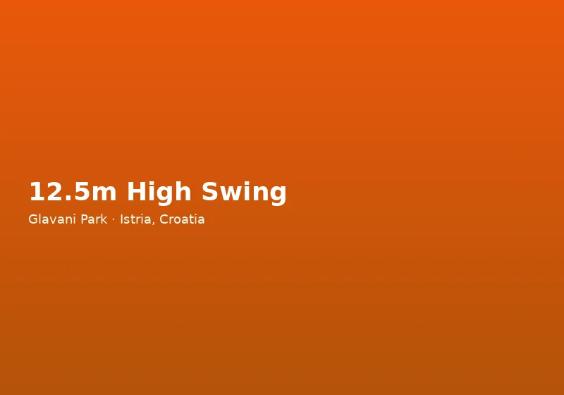

Why Istria Is Ideal for Family Holidays
Croatia's Istrian peninsula consistently ranks among the most family-friendly destinations in Europe. Distances are short, roads are well maintained, English is widely spoken in tourist areas, and the mix of beaches, nature, and culture keeps children engaged without endless hours in the car. Towns like Pula, Rovinj, and Poreč offer safe swimming, ice cream on every corner, and historical sights that capture young imaginations — Roman ruins, medieval walls, and harbour-side promenades.
Beyond the coast, inland Istria provides gentle hiking, farm visits, and truffle-hunting demonstrations that introduce children to rural life. Accommodation ranges from large resort hotels with pools and kids' clubs to private villas and campsite pitches shaded by pine trees. Whatever your budget and style, the region makes it easy to balance relaxation with activity — and that is where Glavani Park fits perfectly into a family itinerary.
Glavani Park: Adventure Designed for Every Generation
Located at Glavani 10, between Barban (6 km) and Vodnjan (10 km), Glavani Park is one of the largest dedicated adventure parks in Croatia, covering 1.5 hectares of oak forest. Unlike generic playgrounds or passive attractions, the park offers real physical challenges under the supervision of trained instructors — making it one of the most rewarding family activities in Istria for visitors who want more than a beach day.
The centrepiece for younger visitors is the yellow high-ropes route, suspended just 2 metres above the ground. Balance beams, rope bridges, and low platforms build confidence in children who may never have tried aerial adventure before. Parents can walk alongside and encourage from below, or join in on the same course. For teenagers and adults, the blue route at 6 metres and the black route at 10 metres provide progressively greater challenges, including a 113-metre zipline integrated into the blue course.
Standalone attractions include a 120-metre zipline through the treetops, a 12.5-metre high swing, an outdoor climbing wall with routes for different skill levels, and ground-level activities suitable for mixed-age groups. The Human Catapult and 20-metre Quick Jump are aimed at older teens and adults with specific height and health requirements — staff advise on suitability at the ticket desk.
A Full Family Day at the Park
Most families spend three to four hours at Glavani Park, though enthusiastic groups often stay longer. The shaded picnic area with coffee, drinks, and ice cream means you can take breaks between activities without leaving the site. Free on-site parking accommodates cars, minibuses, and larger vehicles — useful for multi-family trips or campsite excursions.
The park is open daily from 9 AM to 5 PM, with last entry at 3 PM. Arriving before midday gives you the best chance to complete multiple routes and attractions before closing. From the end of September until the start of July, all visits require advance booking. Call +385 91 896 4525 or use the online booking form to secure your date.
What to bring: comfortable athletic clothing, closed-toe sports shoes (trainers or hiking shoes — no sandals), sunscreen, and water bottles. The park sells refreshments on site, but having your own water is wise on hot summer days. Lockers or leaving valuables in the car are recommended before harnessing up.
Combining Glavani Park with Other Family Days Out
Glavani Park pairs naturally with other Istrian family destinations. After a morning on the ziplines, drive 30 minutes to Pula for the aquarium or amphitheatre. Alternatively, explore medieval Barban or climb the bell tower in Vodnjan on the same day — both towns are minutes from the park. For beach time, the coast around Medulin and Premantura lies within a 40-minute drive.
Many families staying in Rovinj, Poreč, or central Istria villas treat Glavani Park as a dedicated adventure day, then recover with a pool or beach day afterwards. The park is featured by the Istria Tourist Board and regularly receives positive reviews from international visitors praising the professionalism of the English-speaking instructor team.
For group celebrations, ask about birthday party packages with priority access and a dedicated celebration area. Schools and youth groups can enquire about educational outdoor programmes tailored to age and ability.
Age Guidance and Safety for Families
Safety is central to everything at Glavani Park. Every participant receives a harness, helmet, and briefing before each activity. High-ropes routes use continuous belay systems that keep visitors connected at all times. Equipment is CE-certified and inspected daily by staff.
The yellow route welcomes young children accompanied by a responsible adult. Blue and black routes suit older children, teenagers, and adults who meet minimum height requirements. Standalone ziplines and the high swing are popular with teens; the Human Catapult and Quick Jump have stricter age and health criteria. If you are unsure which activities suit your children, call ahead — our team will help you plan a visit that matches your family's ages and confidence levels.
Read our full safety and equipment page for detailed information on certifications, procedures, and what to expect on arrival. Glavani Park has welcomed thousands of families from across Europe and aims to make every visit both thrilling and reassuring for parents.